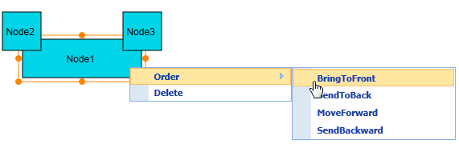
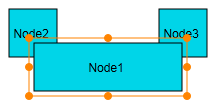
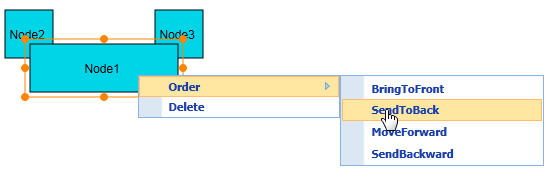
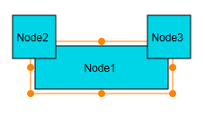
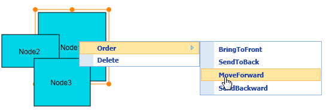
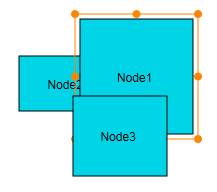
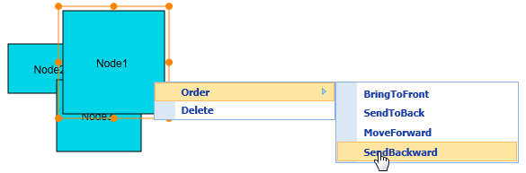
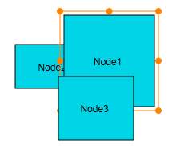

Ordering commands allow you to change the order of selected objects (i.e. nodes and connectors) along the z-axis (z-order value) on the page. The objects can be moved forward or backward. This way, they get displayed over other objects in case two or more objects overlap.
There are four z-order commands, namely:
· BringToFront
· SendToBack
· MoveForward
· SendBackward
Note: The z-order command feature is not supported in SVG mode.
Use Case Scenario
This feature allows you to arrange the nodes in a diagram using simple commands. This way, there are lesser chances of error than when you have to drag and drop a node in cramped spaces.
Appearance and Structure
The following figures illustrate the appearance and function of the z-order commands feature and its settings.
1. Bring to Front Z-Order Command: You can use this command to move the selected object(s) in front of other objects by increasing the z-order value to a higher value than the greatest among the rest of the objects.
The following figures show you how this command affects nodes (and connectors).

Figure 93: Nodes before Using the Bring to Front Command

Figure 94: Nodes after Using the Bring to Front Command
In the figure above, Node1 is moved in front of Node2 and Node3 by adjusting the z-order value of Node1 to a value that is higher than those of Node2 and Node3.
2. Send to Back Command: This command moves the selected object (node or connector) behind all the other objects by setting the z-order value of the selection as 0 (zero), which is the minimum value.
The following figures show you how this command affects nodes (and connectors).

Figure 95: Nodes before Using the Send to Back Command

Figure 96: Nodes after Using the Send to Back Command
Note: Negative values cannot be set as the z-order for nodes and connectors.
3. Move Forward Command: This command sets the z-order value of the selected object to a value that is greater than that of the other objects by 1 (one).

Figure 97: Nodes before Using the Move Forward Command

Figure 98: Nodes after using the Move Forward Command
4. Send Backward Command: This command sets the z-order value of the selected object to a value that is lesser than that of the other objects by 1 (one).

Figure 99: Nodes before Using the Send Backward Command

Figure 100: Nodes after Using the Send Backward Command
Where do I find the installed samples?
You should find the samples for the z-order commands in the same location as the samples for the multiple selection feature.
To view the samples:
1. Open the Essential Diagram sample browser from the dashboard. (Refer to the Samples and Locations section).
2. Go to the Getting Started tab and click Flat Diagram.
Properties
|
Property |
Description |
Type of Property |
Value it Accepts |
Dependencies |
|
EnableZOrder
|
Gets or sets a value indicating whether a z-order can be applied to the selected node/connector. The default value is set to false. |
Dependency property |
Boolean · True · False |
NA (This is not supported in SVG mode) |
|
ConnectorZOrderMode
|
Gets or sets the ConnectorZorderMode for rendering the order of nodes and connectors. The default value is ZOrderMode.Default. |
Dependency property |
Enum · ZOrderMode.Default · ZOrderMode.AlwaysBelow |
NA (This is not supported in SVG mode) |
 Enabling Z-Order Commands in Diagram
MVC
Enabling Z-Order Commands in Diagram
MVC